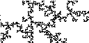

| Here are some examples of estimating f(α) curves by visual inspection of multifractals. | |
| Self-Similar Distributions Reconciling fractals and randomness. |  |
| Statistical Self-Similarity Another way to add some randomness to fractal constructions. |  |
| We conclude our study of multifractals by practicing estimating f(α) curves from visual inspection of a multifractal measure. | ||||||
| Next, we begin our work on random fractals. | ||||||
| ||||||
| Homework 5 | ||||||
| Practice homework | ||||||
| Homework 4 Solutions |